🌟 E2B 简介
E2B（Environment to Build） 是一个开源的云端沙箱代码执行引擎，专为 LLM 智能体、AI 编程助手、自动化测试等场景设计。它通过轻量级容器技术为每个请求提供完全隔离的执行环境，让 AI 模型可以安全地运行任意代码，而不会对宿主系统造成任何影响。
核心特性
- 🔒 安全隔离：每个沙箱运行在独立的容器环境中，完全隔离于宿主机和其他沙箱
- ⚡ 快速启动：沙箱实例秒级创建，支持暂停（Pause）与恢复（Resume），状态持久化
- 🐍 多语言支持：内置 Python、Node.js 等运行时，支持通过自定义 Dockerfile 扩展任意环境
- 📦 模板系统：支持将自定义环境打包为可复用的沙箱模板，一次构建、多次使用
- 🔌 多端接入：提供 Python SDK、TypeScript SDK 以及 CLI 工具，灵活集成到各类工作流
- ☁️ 阿里云原生：基于阿里云 ECS 裸金属实例、RDS PostgreSQL、Redis 构建，稳定可靠
整体架构
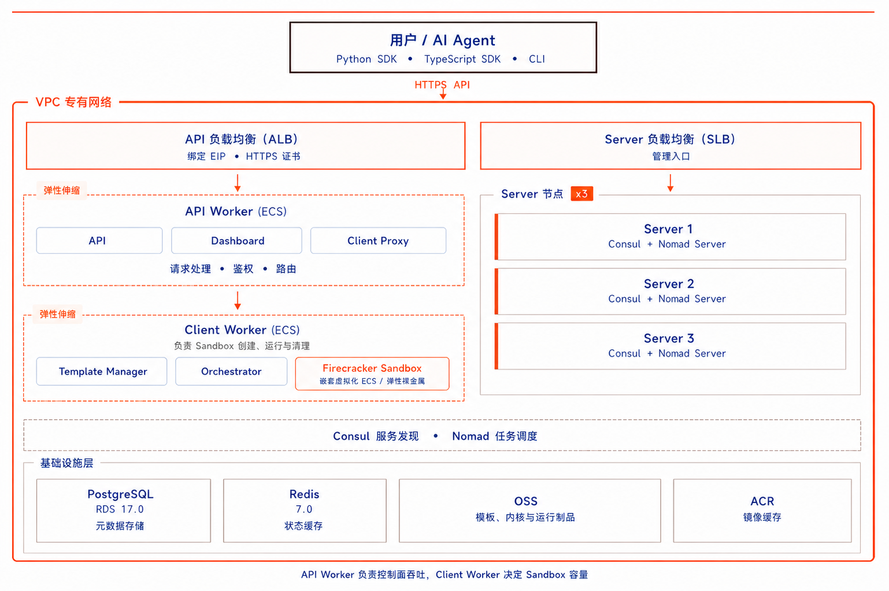
🚀 部署流程
前置条件
⚠️ 已开通阿里云账号，并具备 ECS、RDS、Redis、VPC 等资源的创建权限
1. 一键创建实例
访问 计算巢 E2B 社区版部署页，模板选择集群版，按页面提示填写基础参数。
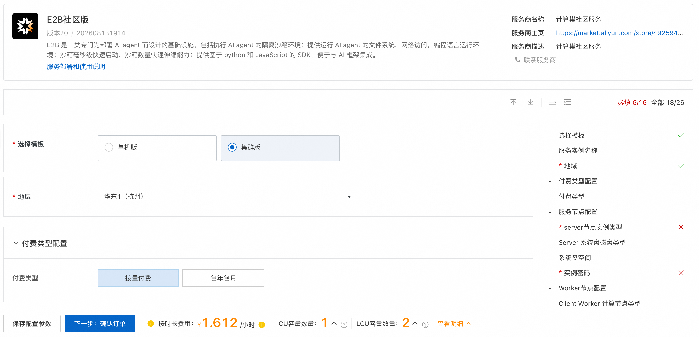
2. 确认资源配置
系统将自动生成费用预估明细。确认配置无误后，点击 下一步：确认订单，核对信息后点击 立即创建。
⚠️ 注意：ECS 嵌套虚拟化目前处于邀测阶段，部署前需完成加白，否则可能导致部署失败。详情请参见 为ECS实例开启嵌套虚拟化功能
⚠️ 注意：E2B 需要使用域名进行访问。您可以选择以下两种方式：
- 公网域名：购买公网域名并为其购买或生成自签名 TLS 证书，支持公网访问
自定义域名：自定义一个域名并生成自定义的 TLS 证书，此方式无法通过公网访问E2B集群，仅可在 VPC 内部调试调用。因此我们预置的部分验证python脚本，如Desktop 沙箱部分无法体验。
生成TLS 证书：生成方式可参考 生成自签名证书
🕐 部署过程约需 10～20 分钟，请耐心等待。
四、部署成功后的检查
1. 获取访问地址与凭证
部署完成后，在计算巢控制台的实例详情页查看各种配置内容，其中比较重要的是： - E2B API URL - E2B API KEY
这两个内容需要配置到您的环境变量中，以通过SDK访问E2B集群。
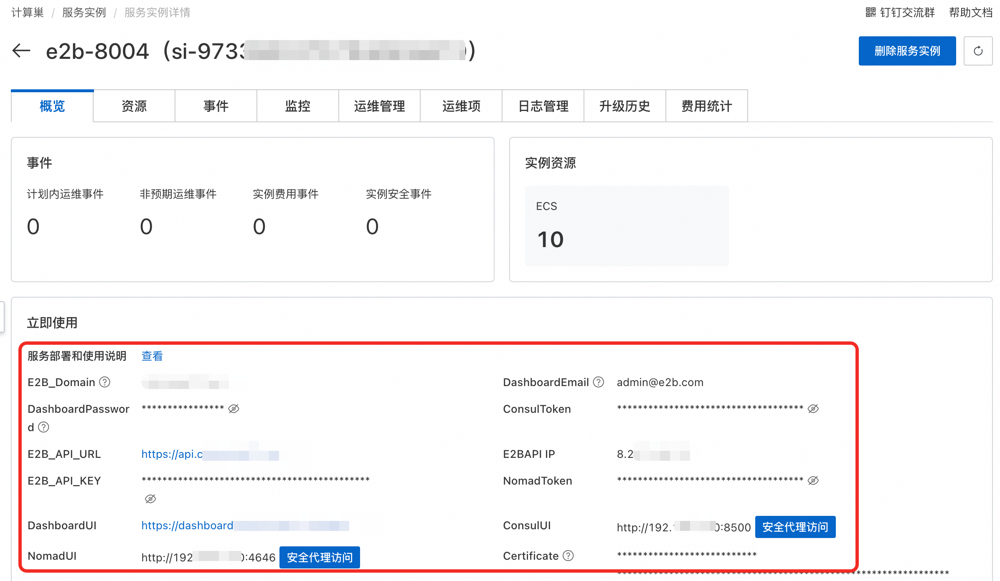
2. 登录 E2B Dashboard
点击 DashboardUI，使用计算巢输出的账号与密码登录。当前预置邮箱为 admin@e2b.com，初始化密码以实例输出为准。
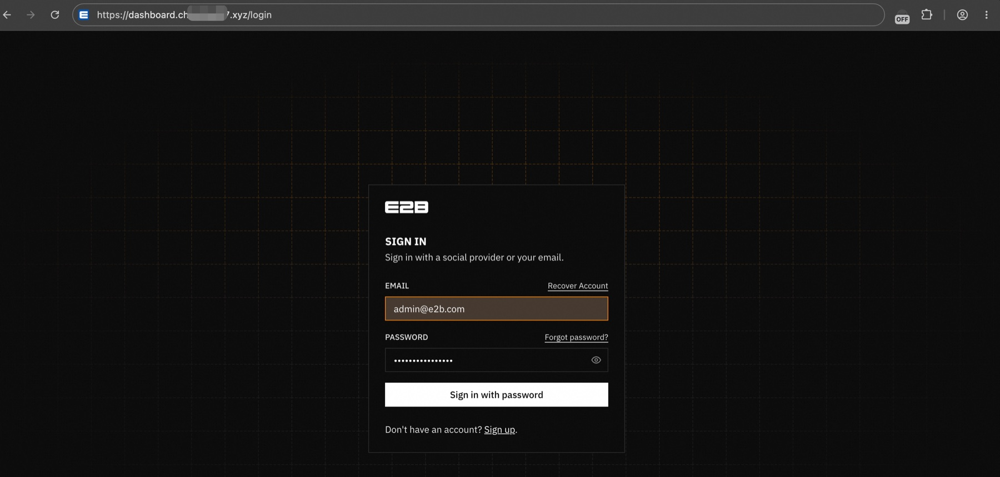
登录后先查看 Sandboxes 页面。这里可以观察当前并发、每秒启动速率、历史峰值和并发曲线。
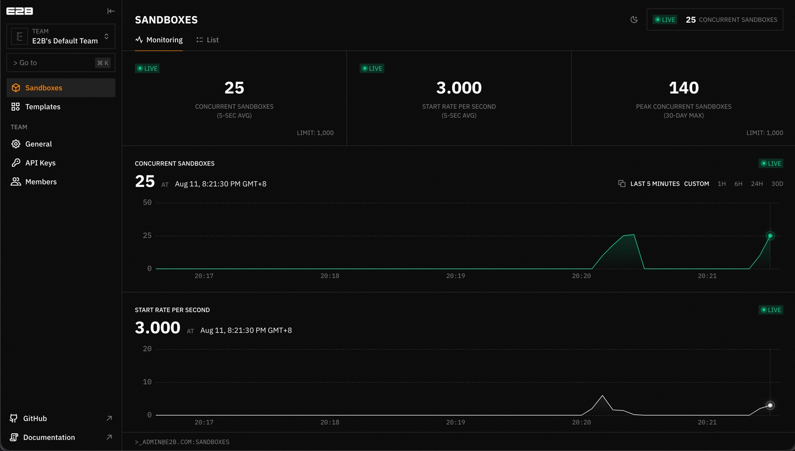
然后进入 Templates，确认 base、code-interpreter-v1、browser-use、desktop 等默认 Template 已经构建完成。
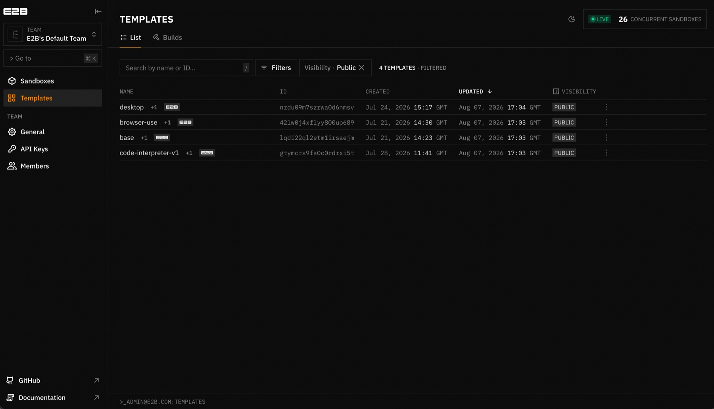
3. 通过 Nomad 检测 Jobs
通过计算巢提供的安全代理打开 NomadUI，使用计算巢输出的 NomadToken登录，检查Jobs是否都正常运行：
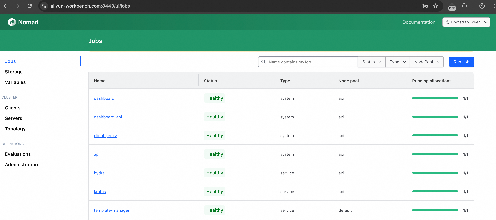
📖 使用流程
🐍 通过 Python SDK 使用
快速开始
⚠️ 注意：使用前，您需要配置好环境变量： - E2B_API_URL，E2B实例部署完成后可以在计算巢控制台的实例详情页查看 - E2B_API_KEY，E2B实例部署完成后可以在计算巢控制台的实例详情页查看 - E2B_DOMAIN，E2B 域名，您购买的公网域名or自定义域名 - SSL_CERT_FILE，受信任的 CA 证书文件路径，仅在自建环境使用自签 CA 时需要
用例一：演示 Sandbox 完整生命周期
import os
# 仅在自建环境使用自签 CA 时需要，且必须在 import e2b 前设置。
os.environ['SSL_CERT_FILE'] = '/path/to/ca-fullchain.pem'
from e2b import Sandbox
connection = {
"api_url": os.environ["E2B_API_URL"],
"api_key": os.environ["E2B_API_KEY"]
}
sandbox = Sandbox.create(
template="base",
timeout=60,
**connection
)
try:
sandbox_id = sandbox.sandbox_id
print('[1/5] 创建 sandbox:', sandbox.sandbox_id)
result = sandbox.commands.run('printf "hello from my own E2B" | tee /tmp/lifecycle.txt')
print("[2/5] 执行命令")
print(" stdout:", result.stdout)
print("[3/5] 暂停 Sandbox")
print(" paused:", sandbox.pause())
print("[4/5] 恢复 Sandbox")
sandbox = Sandbox.connect(sandbox_id, timeout=60, **connection)
result = sandbox.commands.run("cat /tmp/lifecycle.txt")
print(" resumed_stdout:", result.stdout)
finally:
killed = sandbox.kill()
print("[5/5] 删除 sandbox:", sandbox.sandbox_id)
运行脚本，输出如下
[1/5] 创建 sandbox: xxx
[2/5] 执行命令
stdout: hello from my own E2B
[3/5] 暂停 Sandbox
paused: True
[4/5] 恢复 Sandbox
resumed_stdout: hello from my own E2B
[5/5] 删除 sandbox: xxx
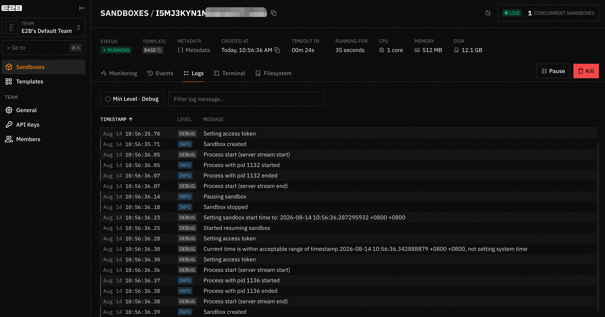
这个用例验证了完整生命周期链路：Create → Command → Pause → Resume → Kill。
用例二：构建 Template，并从 Template 创建 Sandbox
Template 用于固化基础镜像、依赖、文件、环境变量和启动命令。以下示例创建一个临时 Template，构建完成后再从它创建 Sandbox：
import os
# 仅在自建环境使用自签 CA 时需要，且必须在 import e2b 前设置。
os.environ['SSL_CERT_FILE'] = '/path/to/ca-fullchain.pem'
from e2b import Sandbox, Template, default_build_logger, wait_for_timeout
connection = {
"api_url": os.environ["E2B_API_URL"],
"api_key": os.environ["E2B_API_KEY"],
}
template_name = "base"
template = (
Template()
.from_base_image()
.set_envs({"HELLO": "hello from my own template"})
.set_start_cmd('echo "$HELLO"', wait_for_timeout(1_000))
)
build = Template.build(
template,
template_name,
cpu_count=2,
memory_mb=2048,
on_build_logs=default_build_logger(),
**connection,
)
print("template_id:", build.template_id)
print("build_id:", build.build_id)
sandbox = Sandbox.create(template=template_name, timeout=120, **connection)
try:
result = sandbox.commands.run("printf 'template sandbox is ready'")
print("sandbox_id:", sandbox.sandbox_id)
print("stdout:", result.stdout)
finally:
sandbox.kill()
构建过程中可以在 Templates / Builds 查看状态与日志。
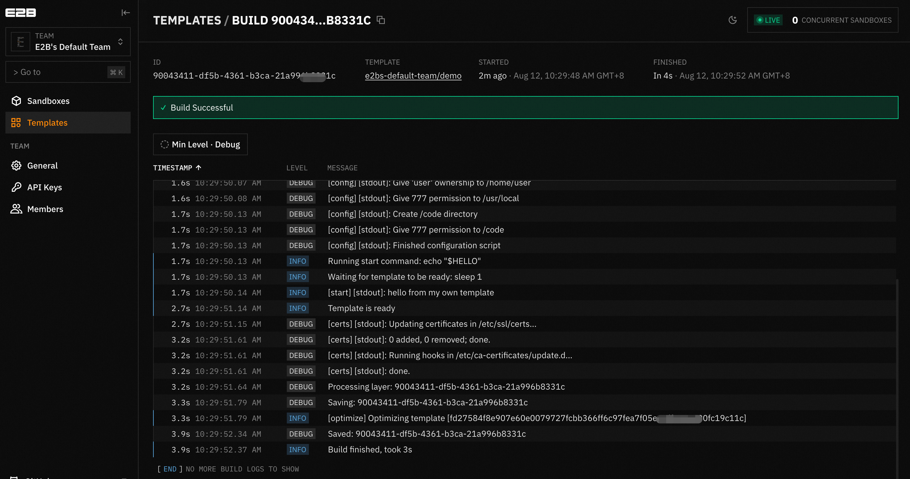
用例三：创建 Computer Use 桌面
e2b-desktop 在 Sandbox 生命周期上封装了桌面、鼠标键盘和 VNC Stream。以下示例创建一个 Desktop Sandbox，启动带临时密码的 noVNC 服务，并输出可以在浏览器中打开的 URL：
import os
# 仅在自建环境使用自签 CA 时需要，且必须在 import e2b 前设置。
os.environ['SSL_CERT_FILE'] = '/path/to/ca-fullchain.pem'
from e2b_desktop import Sandbox
connection = {
"api_url": os.environ["E2B_API_URL"],
"api_key": os.environ["E2B_API_KEY"],
}
desktop = Sandbox.create(
template="desktop",
resolution=(1024, 720),
dpi=96,
timeout=300,
**connection,
)
try:
desktop.stream.start(require_auth=True)
auth_key = desktop.stream.get_auth_key()
stream_url = desktop.stream.get_url(auth_key=auth_key)
# 执行一次真实桌面动作：打开网页并移动鼠标。
desktop.open("https://example.com")
desktop.wait(2_000)
desktop.move_mouse(512, 360)
print("View desktop at:", stream_url)
print("screen_size:", desktop.get_screen_size())
print("cursor_position:", desktop.get_cursor_position())
input("在浏览器中打开 URL，验证完成后按回车清理资源：")
finally:
try:
desktop.stream.stop()
finally:
desktop.kill()
在浏览器中打开 stream_url，即可查看并操作 Sandbox 中的 Linux 桌面，验证完整的 Computer Use 链路。
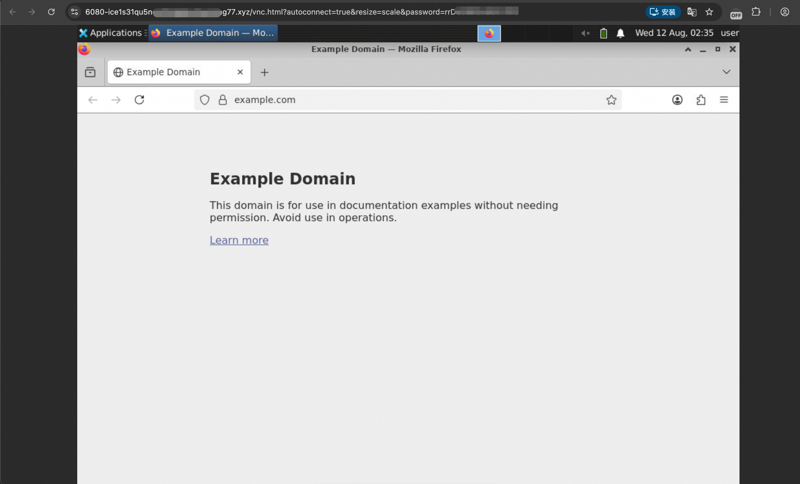
🖥️ 通过 E2B CLI 使用
模板管理
查看现有模板列表：
e2b template list
删除模板：
e2b template delete <template-id>
沙箱管理
查看运行中的沙箱：
e2b sandbox list
连接到指定沙箱（交互式终端）：
e2b sandbox connect <sandbox-id>
终止沙箱：
e2b sandbox kill <sandbox-id>
⚖️ 扩缩容配置
E2B 集群版基于阿里云弹性伸缩（ESS）实现 API Worker 和 Client Worker 节点的动态扩缩容，以应对不同的负载需求。
手动扩缩容
部署完成后，系统已预置以下四条弹性伸缩规则，可在阿里云 ESS 控制台手动执行：
| 规则名称 | 作用 | 调整数量 |
|---|---|---|
api-scaling-out |
API Worker 扩容 | +1 |
api-scaling-in |
API Worker 缩容 | -1 |
client-scaling-out |
Client Worker 扩容 | +1 |
client-scaling-in |
Client Worker 缩容 | -1 |
操作步骤：
- 进入阿里云计算巢实例详情页，点击资源tab页，筛选弹性伸缩:伸缩组
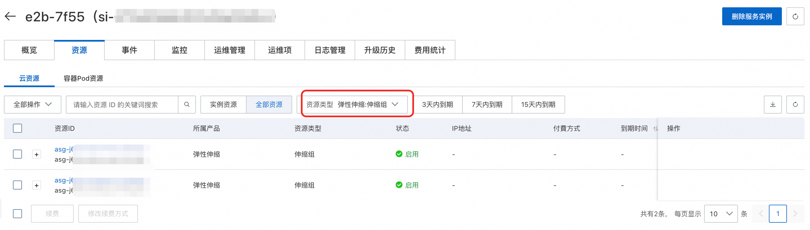
- 找到对应的伸缩组（
client或api） - 进入 伸缩规则 页面，选择对应规则点击 执行
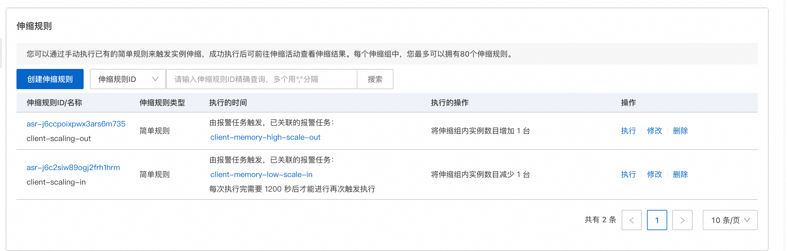
自动扩缩容
- 伸缩组平均内存使用率连续 1 分钟达到 75% 时，新增 1 台 ECS；
- 伸缩组平均CPU使用率连续 2 分钟达到 70% 时，新增 1 台 ECS；
- 伸缩组平均内存使用率连续 10 分钟低于 30% 时，缩容 1 台 ECS(默认不开启)
注意事项
⚠️ 缩容注意：Client Worker 节点缩容时会触发生命周期钩子，系统会等待节点上的沙箱任务完成后再销毁实例（最长等待 60 分钟），请勿强制终止，避免沙箱数据丢失。
⚠️ 裸金属限制：Client Worker 必须使用裸金属实例（
ecs.ebmg6/ecs.ebmc6系列），扩容时请确保所选可用区有足够的裸金属资源配额。
📊 可观测性配置（可选）
E2B 集群版基于阿里云 Prometheus、Grafana 实现可观测性：按下列步骤集成 Prometheus 与 Loki 后，可在 Grafana 中统一查询 Metrics 与 Logs 并完成可视化。
操作步骤：
-
创建可观测可视化Grafana版：
- 在左侧导航栏，单击工作区管理。
- 在工作区列表中，单击创建工作区。
-
在购买页面，配置地域和集群部署地域一致，版本选择专家版或者高级版，Grafana版本号选择 Grafana 11.4.x，并单击立即购买。
-
开通私网地址：
- 在 阿里云可观测可视化 Grafana 控制台 工作区列表中，选择创建的工作区。
- 在基本信息中，点击开通私网地址
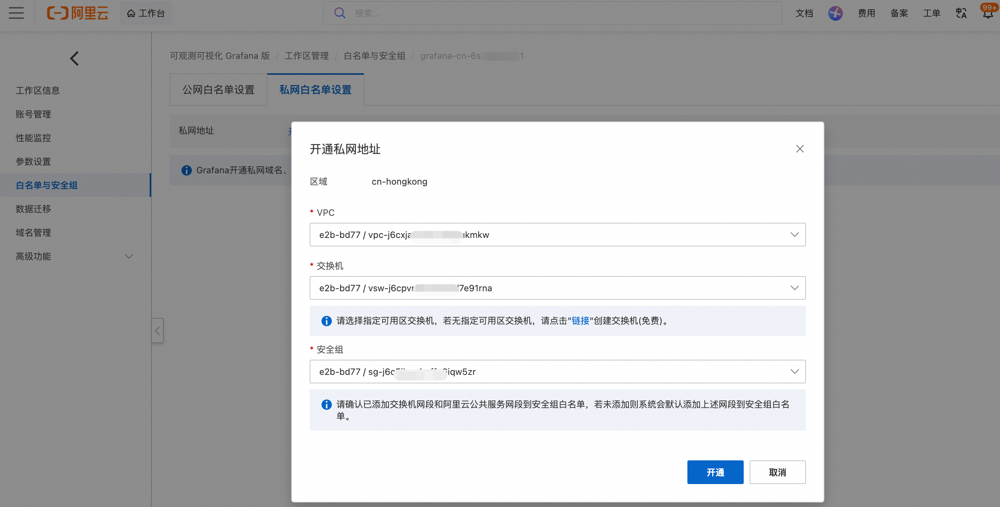
-
选择集群部署的 VPC、交换机以及安全组，点击开通
-
集成 Prometheus：
- 在工作区页面的云服务集成中，选择 Prometheus 监控服务，搜索 prometheus-e2b, 点击集成。
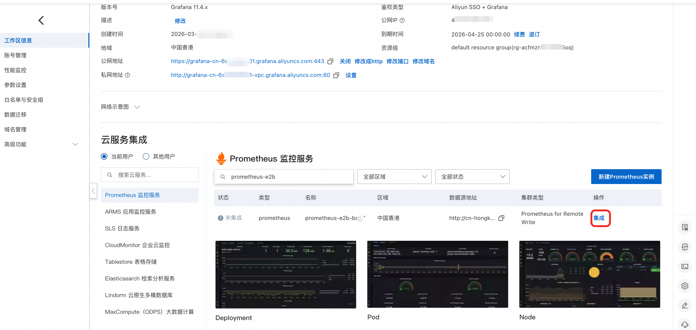
-
集成数据源，配置ak、sk后，点击确认，请确认配置的 ak 具有 AliyunPrometheusMetricReadAccess 权限。
-
集成 Loki：
- 在工作区页面中，点击公网地址，进入 Grafana 公网页面。
- 在左侧导航栏中，点击添加新连接，选择 Loki。
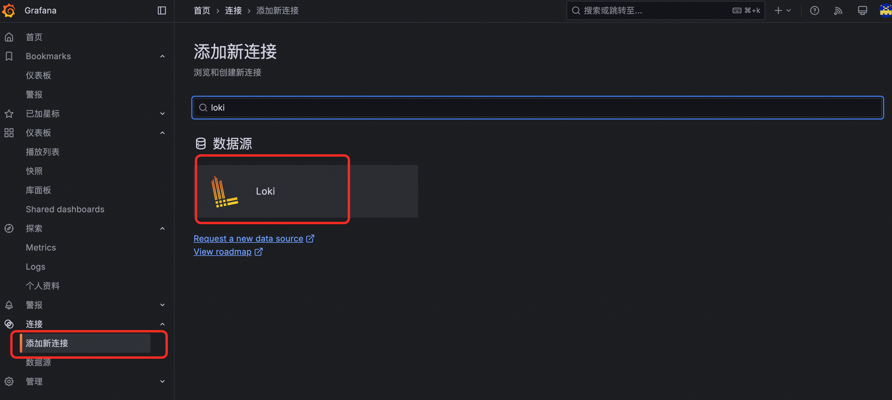
- 配置 Connection，填写URL格式为：http://{API Worker ECS 的私网 IP}:3100
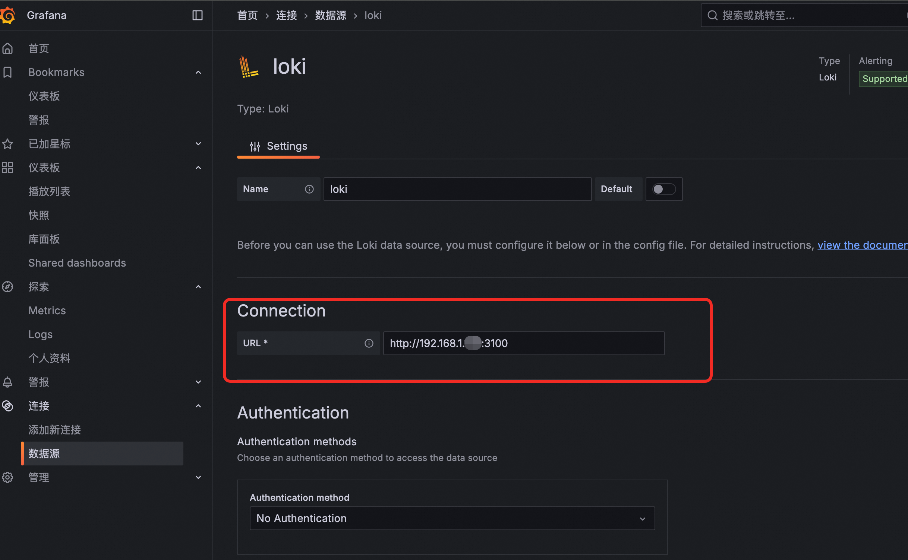
-
点击 Save & test 完成配置
-
集成数据查看：
- 在 Grafana 公网页面中，点击探索中的 Metrics，选择第 4 步配置的 Prometheus 集成的数据源，即可查看 Metrics 数据。
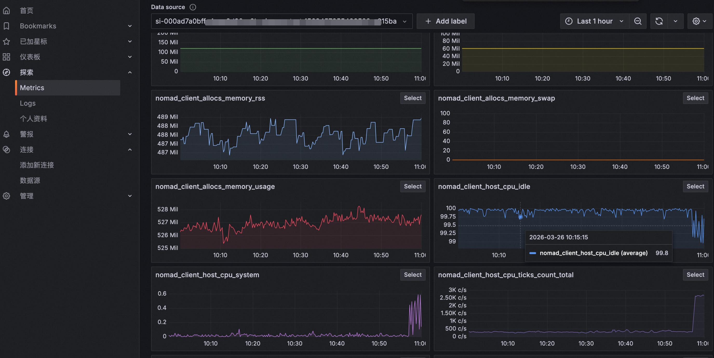
- 在 Grafana 公网页面中，点击探索中的 Logs，选择第 5 步配置的 Loki 集成的数据源，即可查看 Logs 数据。
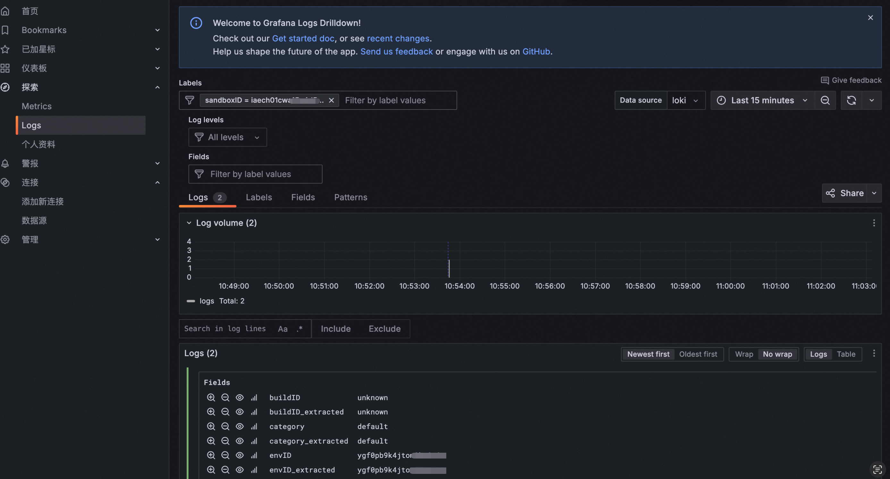
📚 更多资源
- 官方文档：E2B 官方文档（含完整 API 参考、SDK 文档、智能体集成示例）
- Python SDK：e2b-dev/e2b-code-interpreter
- CLI 工具：@e2b/cli on npm